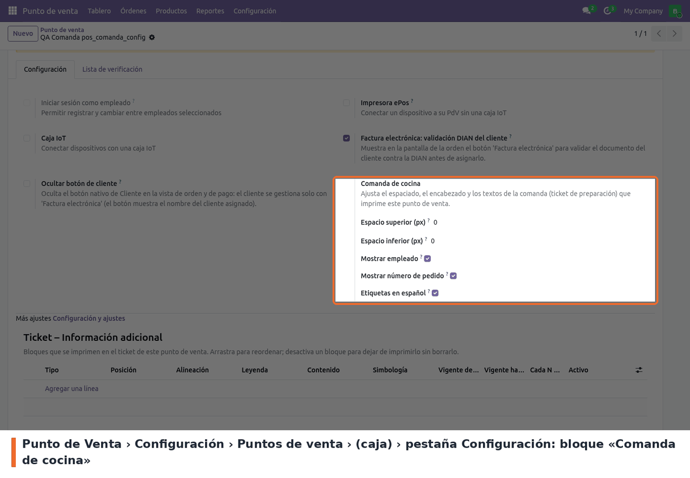
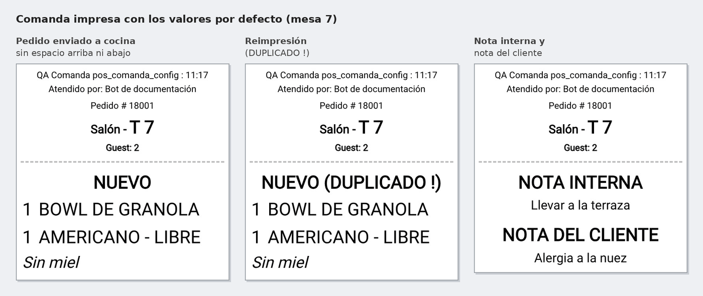
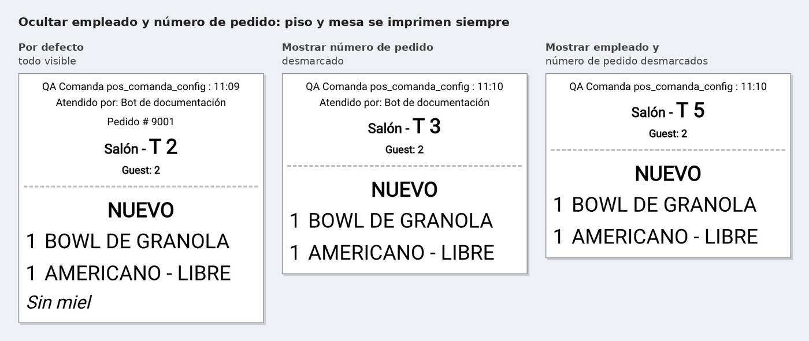
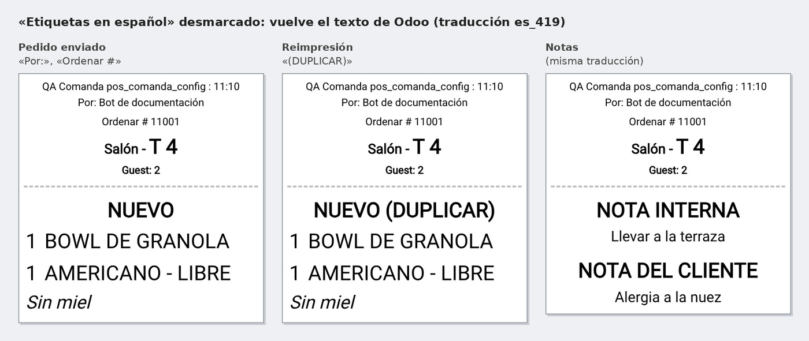
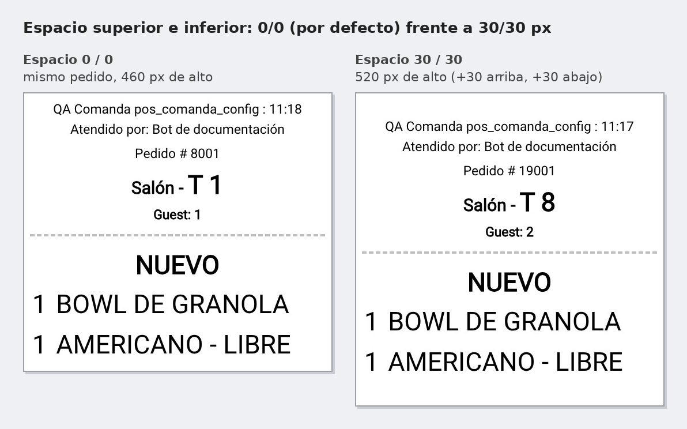

Ajusta, por punto de venta, la comanda que el POS imprime en las impresoras de preparación
(cocina, barra). Es la plantilla point_of_sale.OrderChangeReceipt, la misma que heredan
pos_restaurant y pos_self_order.
En Odoo 19 la comanda trae unos 96 px en blanco arriba (pt-5 mt-5) y 48 px abajo (pb-5) que en
Odoo 17 no existían y desperdician papel térmico. Además, en español (es_419) Odoo imprime
«Ordenar», «Por:» y «(DUPLICAR)». El módulo:
No cambia qué se envía a cada impresora ni cuándo, ni el recibo del cliente.
En Punto de Venta › Configuración › Puntos de venta, abrir la caja y, en la pestaña Configuración, ir al bloque Comanda de cocina:

Punto de Venta › Configuración › Puntos de venta › (caja) › Configuración: bloque «Comanda de cocina»
Para imprimir comandas, la caja necesita al menos una impresora de preparación. Los cambios se aplican la próxima vez que se carga el POS, y se pueden hacer con la sesión abierta.
No hay nada que hacer en la caja: al enviar el pedido a cocina (Enviar en restaurante, o al validar el pago en una caja sin mesas), la comanda sale con la configuración de esa caja. Con los valores por defecto sale sin blanco arriba ni abajo y con las etiquetas en español, también en la reimpresión (ícono de cubiertos) y en la comanda de notas:

Comanda real con los valores por defecto: pedido, reimpresión y notas
Al ocultar el empleado o el número de pedido, el piso y la mesa siguen impresos:

Comanda real con «Mostrar número de pedido» y «Mostrar empleado» desmarcados
Con Etiquetas en español desmarcado vuelve el texto de Odoo en el idioma del usuario:

Comanda real con «Etiquetas en español» desmarcado
El espacio superior e inferior se suma al papel impreso, sin cambiar el contenido:

Mismo pedido con espacio 0/0 y con 30/30 px
pos_restaurant) es texto fijo en inglés del core y no se traduce;
el módulo no lo toca.